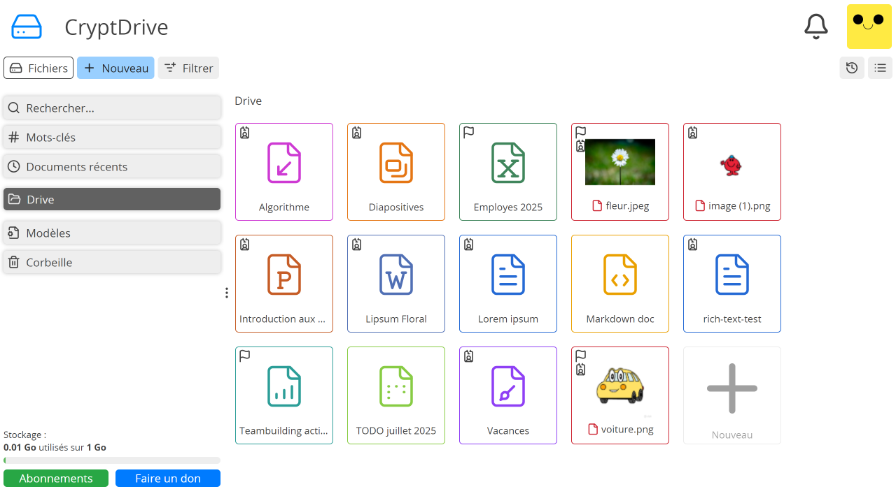
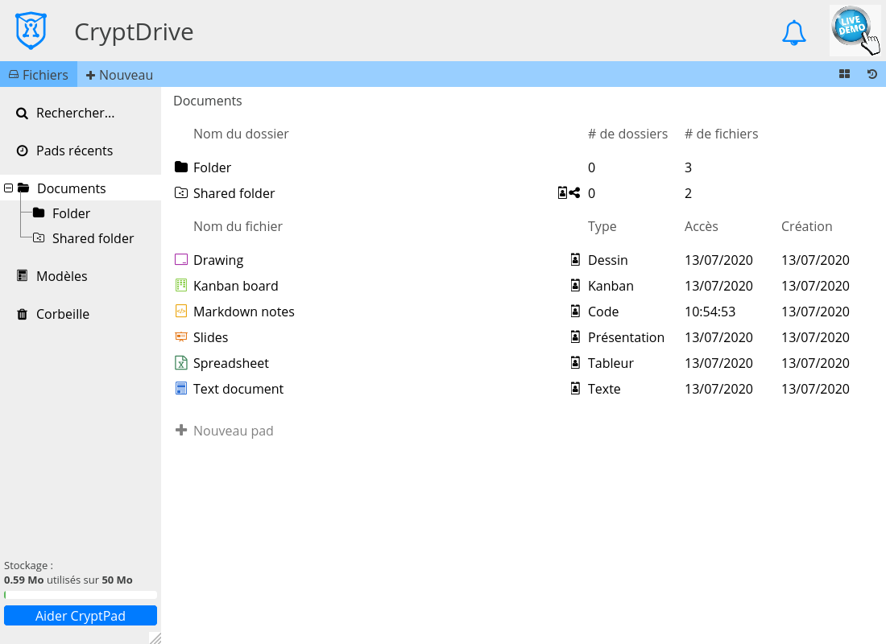

CryptDrive#
CryptDrive est utilisé pour stocker et organiser les documents. Pour les utilisateur·ices connecté·es, c'est la page par défaut de CryptPad. Il est aussi accessible depuis les autres pages :
Clicsur le logo (en haut à gauche).Avatar (en haut à droite) > CryptDrive.
Affichage#
Les documents dans le drive sont affichés sous forme de liste ou de grille. Pour passer de l'un à l'autre, utiliser le bouton à droite dans la barre d'outils du drive (sous l'avatar).
En mode grille CryptPad peut afficher des miniatures des documents, si elles sont activées dans les préférences utilisateur·ice.

CryptDrive en mode grille.#

CryptDrive en mode liste.#
Gestion des documents#
Dossiers#
Utilisateur·ices enregistré·es
Il y a plusieurs manières de créer un dossier dans le drive :
Nouveau dans la barre d'outils du CryptDrive > Dossier.
Clic droit> Nouveau dossier.Ctrl + e > Dossier.
Une fois qu'un dossier est créé, des documents peuvent y être ajouté en les faisant glisser dans le drive. Vous pouvez aussi glisser/déposer des fichiers d'un dossier à un autre. Utilisez la barre latérale à gauche pour déposer le fichier dans le dossier désiré.
Pour changer la couleur d'un dossier :
Clic droitsur le dossier > Changer la couleur.
Pour partager un dossier et tout son contenu :
Clic droitsur le dossier > Partager. Le dossier sera alors converti en dossier partagé.
Renommer#
Il y a deux manières de renommer un document dans CryptPad. L'une change le titre pour tou·tes les utilisateur·ices, l'autre uniquement pour vous.
Pour changer le titre d'un document pour tou·tes les utilisateur·ices qui ont ce document dans leur drive :
Clicsur le titre ou sur le bouton dans la barre d'outils du document.Entrer le nouveau titre.
Valider avec le bouton ou la touche Entrée.
Pour renommer un document uniquement dans votre drive :
Clic droitsur le document dans votre drive > Renommer.Entrer le nouveau titre.
Valider avec la touche Entrée.
L’icône indique les documents qui ont été renommés dans votre drive uniquement.
Supprimer#
Il y a deux manières de supprimer un document sur CryptPad :
Supprimer un document le fait disparaître du drive mais pas de la base de données. Le document reste dans le drive d'autres utilisateur·ices qui l'ont stocké et peut être restauré par l'historique.
Détruire un document le supprime de la base de données de manière permanente. Le document est supprimé de tous les drives où il est stocké, et il ne peut pas être restauré par l'historique. Propriétaires du document
Note
Si un document n'est stocké dans aucun drive, il est détruit de la base de données après 90 jours d'inactivité (ce délai peut être réglé par les administrateur·ices du service).
Pour supprimer un document dans CryptDrive.
Faire glisser le document depuis le drive jusque dans la Corbeille.
Clic droit> Déplacer vers la corbeilleSélectionner le document puis appuyer sur la touche Suppr.
Pour supprimer directement un document depuis CryptDrive sans passer par la corbeille :
Sélectionner le document puis appuyer sur les touches Maj + Suppr.
Pour vider la corbeille :
Clic droitsur l'onglet Corbeille à gauche du drive > Vider la Corbeille.Clicsur l'onglet Corbeille pour accéder à la corbeille > Vider la Corbeille.
Si vous êtes propriétaire de documents dans la corbeille lorsque vous la videz, il vous est demandé si vous souhaitez les supprimer ou les détruire.
Pour détruire un document sans le stocker dans la corbeille :
Clic droitsur le document dans le drive > Détruire. Propriétaires du document
Note
Une fois détruits, les documents peuvent encore apparaître dans le drive d'autres utilisateur·ices. Une fois qu'un document a été ajouté au drive d'un·e utilisateur·ice, la nature chiffrée de CryptPad ne permet pas de le retirer. Par conséquent, un document détruit peut encore apparaître dans le drive d'un·e utilisateur·ice s'iel l'avait précédemment stocké. Le document ne pourra cependant pas être ouvert.
Historique#
L'historique du drive est sauvegardé et peut être restauré en cas de besoin. Depuis le drive :
Clicsur le bouton en haut à droite (sous l'avatar).Utiliser les flèches et pour remonter dans l'historique.
Restaurer la version affichée avec Restaurer ou sortir de l'historique sans restaurer avec Fermer.
Pour économiser de l'espace de stockage, l'historique du CryptDrive peut être supprimé dans les préférences utilisateur·ice.
Note
Les dossiers partagés ont leur propre historique, séparé de l'historique du CryptDrive. Restaurer l'historique du drive n'affecte pas les dossiers partagés, inversement l'historique d'un dossier partagé peut être restauré ou supprimé sans affecter le reste du drive.
Modèles#
Utilisateur·ices enregistré·es
Les modèles sont des gabarits réutilisables pour créer des documents de même type, par exemple facture, papier à lettre, rapport, etc.
Créer un modèle :
Sélectionner l'onglet Modèles dans le drive.
Nouveau pad dans la barre d'outils.
ou
Dans un document existant : Ficher > Sauvegarder en tant que modèle.
ou
Créer un nouveau document.
Sur l'écran de création sélectionner Nouveau modèle.
Utiliser un modèle :
Sélectionner le modèle lors de la création d'un nouveau document.
Dans un document existant : Ficher > Importer un modèle. Attention cette option remplace le contenu du document avec celui du modèle.
Storage quota#
When reaching the storage limit, you can still edit existing documents but you cannot create new ones.
To reclaim storage space you can clear:
The drive history
Documents history, from their properties
If necessary, an administrator can easily raise the storage limit of a specific account.
Note
Some CryptPad instances offer paid plans with more storage space.